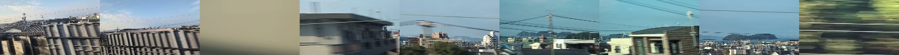

WINDOW GUESS 車窓を、行ったり来たり。
この車窓、どこ？
建物のすき間を戻って見ると、旅の場所が見えてくる。
見覚えのない景色から、始めよう。
FILM▮ お題の瞬間
車窓を準備しています…
動画を読み込めませんでした。
お題の瞬間

少し前少し先
再生速度
当てるのは「お題の瞬間」の場所。
前後に動かしても、お題は変わりません。時間制限はありません。
建物の向こうを、少し長く眺めてみよう。
近くの屋根や電線より、遠くの輪郭に注目。前後に動かすと、建物に隠れていたものが見えてきます。
動画：michikusa（運営者撮影） · 2026年8〜9月 · 音声なし
YOUR GUESS
お題は、どのあたり？
路線の近くをタップして、ピンを置こう。
東海道新幹線
地図の背景を読み込めません。路線図でも回答できます。
まだピンが置かれていません
当てるのは、お題を撮った時の列車の位置。
ANSWER · お題の瞬間
街の向こうに、三河湾。
愛知県蒲郡市 · 三河安城〜豊橋の間
撮影地点から
旅のスコア
ここは蒲郡の街並みを見下ろすあたり。屋根や建物の間から、三河湾の水面や島の輪郭がのぞきます。一枚では隠れていた景色も、少し時間を戻すとつながって見えてきます。
答え合わせの後は、映像を動かすと地図の紫の点も動きます。緑の「お題」は同じ場所に残ります。
● あなたの回答 ● お題 ● 再生位置
WINDOW JOURNEY
18の車窓を、旅しました。
気になった景色は、上の番号から何度でも。
18問の試作 撮影時刻と同じ乗車のGPSを対応づけています。距離は線路に沿った目安で、GPS誤差を含みます。